Idaho's "positive" started including presumed cases 4/17, so possibly off by up to 9.8% as of 5/17
Issue number 308
waded opened this issue on April 26, 2020 at 6:25 pm
The report for Idaho at https://covidtracking.com/data as of 4/26 states “as of 4/24, Idaho separately reports both probable and confirmed cases”. That’s not correct; Idaho DHW started reporting probable cases separately from confirmed (positive) cases on 4/9, and the number of cases shown on https://coronavirus.idaho.gov since 4/17 has been the sum of probable and confirmed/positive!
At the time I opened this issue the API documents stated “positive” is “Total cumulative positive test results”, so I presume the data you’re collecting as “positive” wasn’t intended to include Idaho’s probable counts.
You can see evidence of this in screencaps. Note the label, and what the label says going back through 4/17, 4/9, earlier.
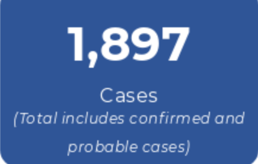
Idaho DHW’s Tableau dashboard (which https://coronavirus.idaho.gov started linking to on 4/2) has the detailed data needed to fix this, in tooltips on this cumulative cases chart:
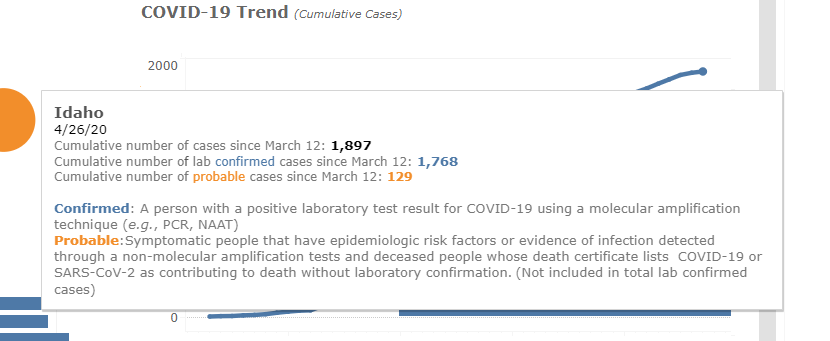
If the chart is ever removed, I have a copy of the data as far back as 4/9 I can provide.
Comments
This issue has been automatically marked as stale because it has not had recent activity. It will be closed if no further activity occurs. Thank you for your contributions!
This is still an issue. For example, Idaho DHW reported 2203 cumulative confirmed/positive, 216 cumulative probable on 5/16, for a sum of 2419 (the sum is published at coronavirus.idaho.gov, the detail is published on the Tableau dashboard linked to from there, daily just after 5PM Mountain, except recently they’ve stopped updating it on Sunday.)
It appears the project has captured positive=2419 for date=2020517.
Idaho DHW’s not explained how these counts handle probables that become positive, but I will say that since there have been days when the probable cumulative count decreased (5/7 for example), so I think what they are doing is subtracting from probable, and adding to confirmed, on the day it is confirmed and reported. That indicates this project may be overcounting Idaho positives by up to 216/2203=9.8% as of 5/16.
Let me know how I can help here. I’ve developed a Tableau extract parawr that can get the correct numbers from Idaho DHW’s dashboard, but I don’t quite understand the layout of this project, in particular how the scraping works for Idaho now.
Hi @waded, Thanks for bringing this to our attention. We are currently reviewing the issue and should have updates for you shortly. (Next github issues shift: for comments see https://covid-tracking.slack.com/archives/C0116LT5CTT/p1589985879306600)
Hi @waded, Thanks for pointing out this data. It was not a problem for positive count since we bundle confirmed and probable cases for that field. However, it turned out that we had sometimes been inferring our negative test counts with total - (confirmed + probable) negatives, rather than total - confirmed, before we made a note of Idaho’s separation of the fields formally. As a result, many of our negative test values were too low.
I went through our edit history for negatives, and located days we calculated the negative value using confirmed + probable positives according to the figures from hovering over each day on the Tableau chart “Statewide cases”. Then I corrected those days to subtract just the confirmed positives (those that had been verified by tests) from totals rather than confirmed + probables. Note that, depending on the time of day we updated, there was sometimes a 1-day lag I had to account for. There were 12 days between 4/16-4/30 I corrected. I also carried over a negative value on one day to prevent decreases in negatives.
After: 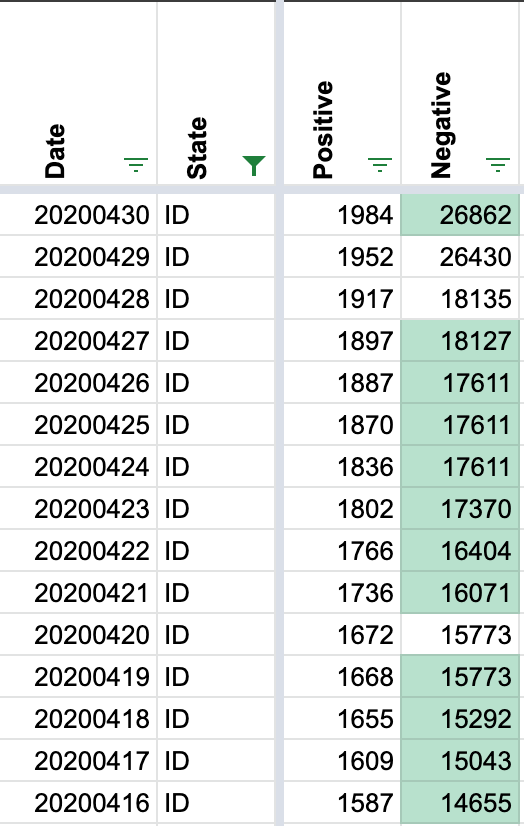
Before:
April 30 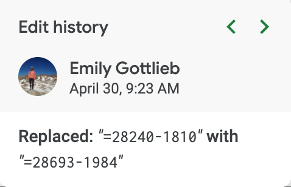 Should be 1831 (from April 29): 28693-1831 = 26862
April 27 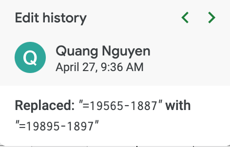 Should be 1768 (from April 26): 19895-1768=18127
April 26 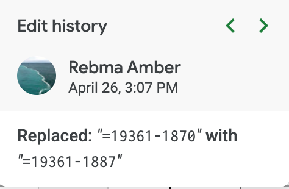 Should be 1760 (from April 25): 19361-1760=17601. But, carried 17611 to not decrease negatives.
(Note: changed April 25 in our data to 17611 to account for removal of evening shift & not decrease negatives)
April 24 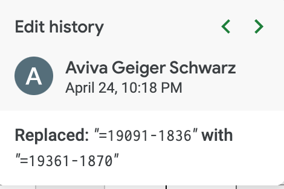 Should be 1750 (from April 24): 19361-1750=17611.
April 23 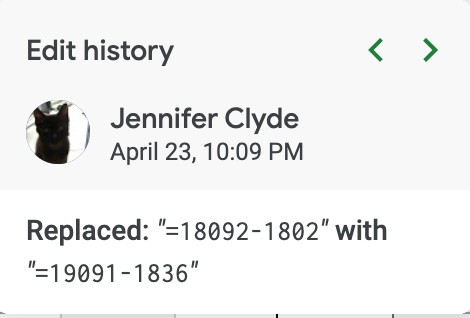 Should be 1721 (from April 23): 19091-1721=17370
April 22 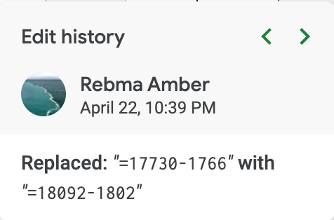 Should be 1688 (from April 22): 18092-1688=16404
April 21 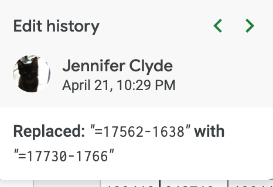 Should be 1659 (from April 21): 17730-1659=16071
April 19 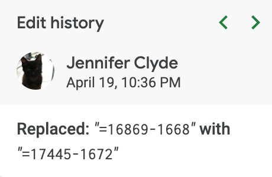 Should be 1581 (from April 19): 17445-1672=15773
April 18 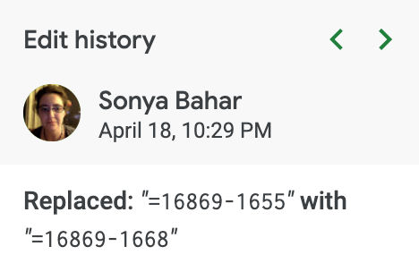 Should be 1577 (from April 18): 16869-1577=15292
April 17 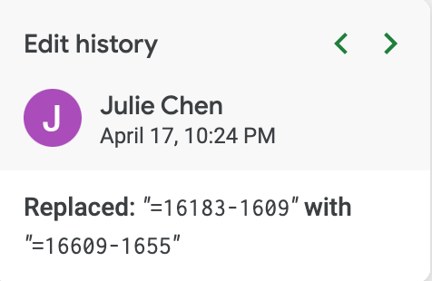 Should be 1566 (from April 17): 16609-1566=15043
April 16 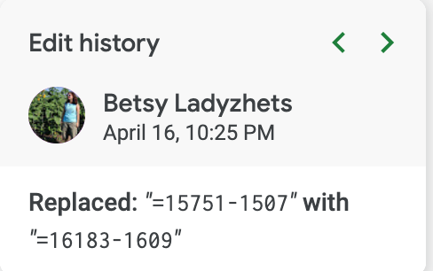 Should be 1528 (from April 16): 16183-1528=14655
We will change our public note to reflect that ID has been reporting confirmed positives since 4/9.
I’ll check back in a few days when this is flushed through and e.g. 5/22’s numbers can be observed.
The change to negatives makes sense (although I think to infer negatives in this way is quite wrong, because of lag between reporting tests and positives, as well as double counting on patient, I’ve not seen any notable analysis based on the tracking projects negative field.)
I still don’t agree that Idaho’s “probable” count should be bundled into “positives”, which API docs still describe simply as “Total cumulative positive test results” and Idaho’s “probables” are not that. But if that is intentional and you’re doing it consistently across states, then so be it (although I recommend API docs be more specific; I will open a separate issue.)
The link for the Tableau dashboard mentioned is currently: https://public.tableau.com/profile/idaho.division.of.public.health#!/vizhome/DPHIdahoCOVID-19Dashboard_V2/Story1
That URL’s changed at least once since Idaho DHW started publishing it. They’ve to-date always linked to it from https://coronavirus.idaho.gov if the link above stops working.